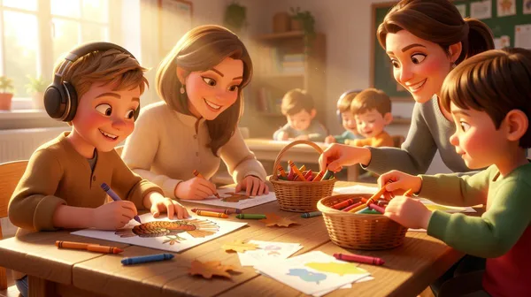

Coloring Book
📖 15 min
How Thanksgiving Coloring Boosts ND Kids' Focus & Creativity
Thanksgiving coloring pages boost fine motor skills, creativity & focus in kids with ADHD, dyslexia & autism. Download our free resource!
March 09, 2026 at 02:29 PM
Read More →